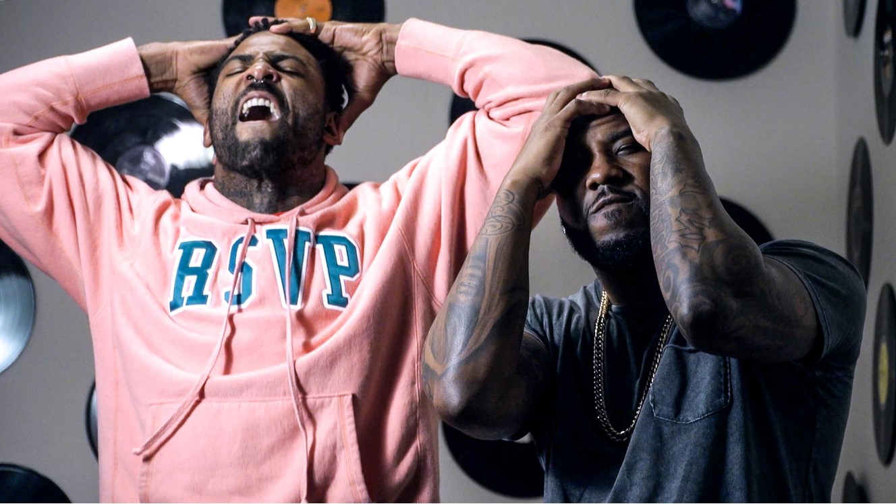

Tight Eyez es uno de ellos, el proviene de South Central, California, durante años se dedico a batallar y participar en eventos, haciendo visible el estilo y ganandose el respeto de los demas bailarines a lo largo del mundo, sus movimientos son rapidos y precisos, y es muy creativo. KRUMP es un estilo de danza que se creó en el año 2000, como un movimiento de un par de personas y promovido por unos pocos. Pero, incluso después del éxito y la exposición del documental “RIZE”, Krump necesitaba ser innovado para tener elementos básicos y fundamentales para que pueda extenderse al mundo como movimiento. Por lo tanto, Tight Eyez permaneció en la escena callejera para desarrollar a Krump durante seis años después del lanzamiento de la película, publicando innumerables cantidades de metraje y DVD para mantener a Krump relevante. Luchó y ha estado invicto en batallas callejeras durante más de una década. Estos esfuerzos lo llevaron a películas como "STOMP THE YARD", "BE COOL" y "STEP UP 4: REVOLUTION".
El segundo creador y no por eso menos importante es Jo’Artis “Big Mijo” Ratti, sus movimientos se caracterizan por ser amplios y fuertes. Se sabe que Mijo es uno de los Bailarines de Krump que mejor emplea sus manos y el Lenguaje del estilo. Es uno de los creadores originales del Krump y ha estado enseñando sus fundamentos por más de 10 años. Sus trabajos incluyen Puma, Sony, Nicki Minaj, Rita Ora, Gwen Stefani, Eve y Madonna. Actualmente está de gira con Mariah Carey y está emocionado de compartir su oficio y su punto de vista con el mundo. Krump es una forma de arte de baile callejero; una mezcla de trabajo de personajes, musicalidad y creatividad. Jo'Artis "Big Mijo" Ratti quiere compartir las raíces de este estilo de baile y la historia cultural para que los bailarines entiendan de dónde viene. Lo más importante para Mijo es la experiencia de aprendizaje de todos nosotros estando conectados.
En el 2019, ambos compitieron en Fusion Thug Concept, llegando a la final representando su creacion: el estilo Krump, mostrando porque el estilo y ellos son tan unicos, con un gran despliegue de fuerza y espiritu. a continuacion un video mostrando una de sus batallas para que puedan apreciar su estilo: